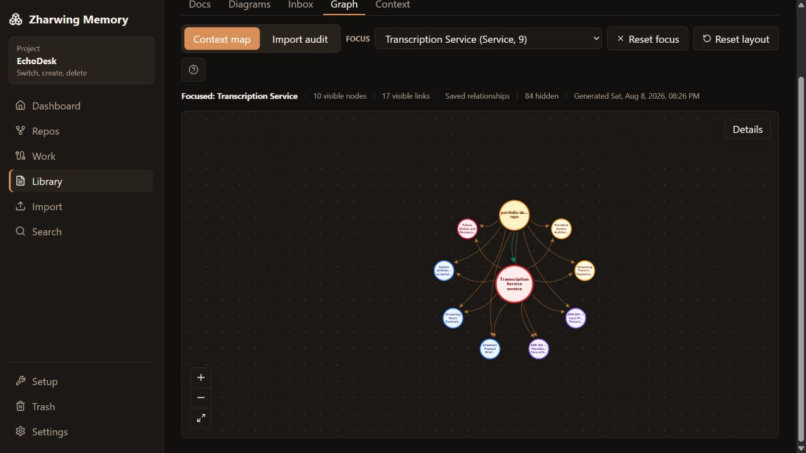
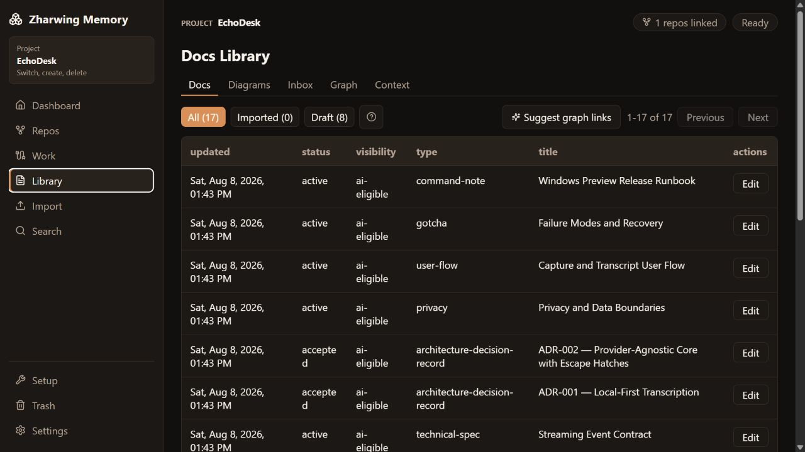
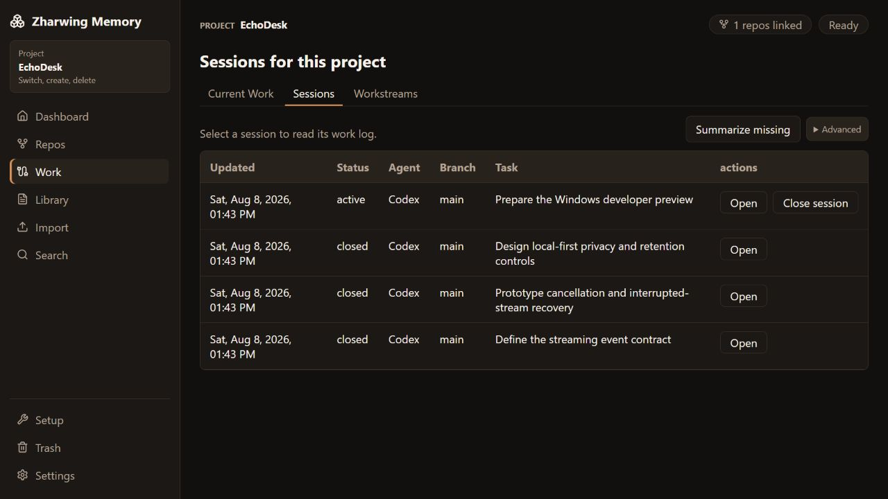
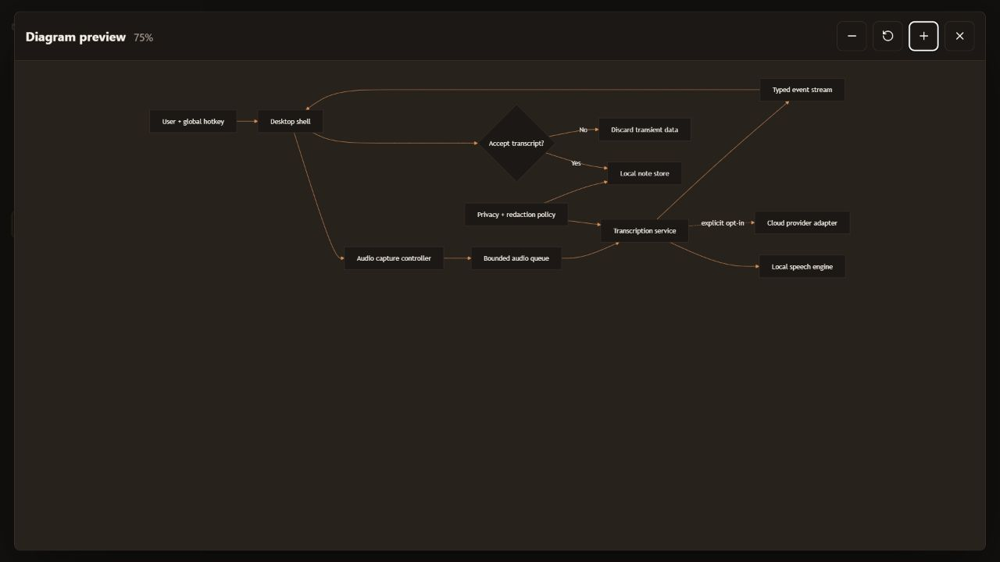

Sessions and checkpoints
Record goals, progress, touched files, blockers, and next steps so a future session can resume deliberately.
Coding agents forget between conversations. Memory keeps sessions, decisions, diagrams, and current work in files on your machine, so tomorrow's session starts where today's ended.

Screenshots use EchoDesk, a made-up project built only for these images.
Memory runs on your machine — browser UI, desktop app, daemon, CLI, and MCP. This page is just documentation. It never sees your projects.
Coding agents are excellent at the current task and unreliable at remembering why a decision was made three sessions ago. Context gets trapped in transcripts, copied into oversized prompt files, or rebuilt manually every morning.
Zharwing Memory separates the agent from the memory. Your coding tool does the work; Memory keeps the project record organized, searchable, and scoped to one project at a time.
Six things Memory keeps for every project, readable by you and by your agent.
Record goals, progress, touched files, blockers, and next steps so a future session can resume deliberately.
Keep decisions, runbooks, architecture notes, gotchas, and Mermaid diagrams beside the work they explain.
See exactly what goes into a context bundle, what got left out and why, and roughly what it costs in tokens.
Connect workstreams, sessions, decisions, files, services, packages, and topics in a navigable project map.
Find prior work quickly and bring existing Markdown documentation or session archives into the same model.
Apply visibility rules, never-send patterns, secret scanning, redaction, and explicit review modes.
Real screens from the browser UI and the native desktop app.




A small repository pointer lets tools identify the matching local memory project.
Read what happened last time — unfinished tasks, blockers, next steps — before starting today’s session.
The agent records checkpoints after decisions, milestones, or risky changes—not after every message.
Close with what changed, what remains, and which files matter for the next session.
There is no installer yet, so everything runs from the repo. One command starts the daemon and the browser UI together.
# Clone and install
git clone https://github.com/zharwing/memory.git
cd memory
corepack pnpm install
# Start the daemon and the browser UI together
corepack pnpm dev
# Open in your browser
http://127.0.0.1:5174/
# Optional: choose where memory is stored by adding
# an untracked .env before you start
# ZHARWING_MEMORY_ROOT=<absolute-private-store-path>No token, launcher, or auth setup for normal single-user use. The default store location works without any configuration; if you set ZHARWING_MEMORY_ROOT, keep that folder outside the source repository. Prefer two terminals? dev:daemon and dev:web run the same thing split apart.
Visit http://127.0.0.1:5174/. This is the same interface the desktop app runs.
Create a project, choose its private store, then attach one or more Git repository roots.
Install the MCP configuration for Codex, Claude Code, or another compatible client.
Use Dashboard, Repos, Work, Library, Import, Search, Trash, and Settings in a local browser tab. Start the daemon separately and type or paste absolute folder paths.
The Tauri window renders the same React application. Its Rust host starts and owns a hardened local daemon, keeps desktop authority outside the webview, and adds native folder Browse buttons.
Drive the same daemon from the zharwing-memory command line, or connect a coding agent over MCP. Neither needs a window open.
Codex, Claude Code, Gemini CLI, local-model tools, and other MCP clients handle the engineering. Memory holds what they need to remember between runs.
memory.get_startup_state
memory.start_session
memory.search
memory.get_session_detail
memory.preview_context_bundle
memory.get_context_bundle
memory.save_checkpoint
memory.close_session
+ health and recent-session helpers
Project setup, imports, backups, Trash, and graph settings stay in the UI and CLI, where a person can see them.
App code and your memory store live in separate places. Markdown files are the real data; the indexes are caches you can rebuild at any time. Nothing here needs an AI provider to work.
Read the security policy →Sessions and context resolve to the selected project.
Mark information human-only, private, or never-send.
Apply ignore patterns, secret scanning, redaction, and high-risk blocking.
Project records move through Trash and backup boundaries before permanent removal.
The daemon owns project, session, context, privacy, search, graph, and storage behavior. The browser UI, native desktop app, CLI, and MCP are adapters around the same rules.
There is no installer yet. You clone the repo and run it. Packaging and installer testing are still ahead.
The core has solid automated tests. End-to-end coverage of every browser and desktop workflow does not exist yet.
Sessions, search, graph, context, and MCP all work without one. Only the optional relationship analysis needs a local OpenAI-compatible provider.
Memory is local software. The Web UI runs on localhost, and nothing syncs between machines. If you want your memory on two computers, you move the folder yourself.
No. Your coding agent does the engineering. Memory stores the project context and session history it reads from, and gives you the controls over it.
Yes, and it is the full interface, not a cut-down one. Run corepack pnpm dev and open http://127.0.0.1:5174/ — no token or auth setup for normal local use. The hardened profile, for advanced setups, uses a one-shot bootstrap instead; a daemon token never belongs in browser code. In the browser you type or paste folder paths, since browsers cannot open a native folder picker.
No. This is documentation only. Memory runs locally and uses a private store path chosen on your machine.
No. The core workflow is deterministic. A local OpenAI-compatible provider is optional for assistant summaries and semantic relationship proposals.
Yes. A product can link multiple repository roots while preserving one project-scoped memory record.
The repository documents MCP setup for Codex, Claude Code, and Claude Desktop. Other compatible clients can use HTTP or stdio integration.
Read the source, read the docs, and see whether it fits how you work.